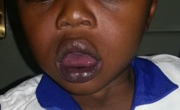

14 Evaluating Heart Diseases
To fully evaluate a child with a suspected cardiac condition, one needs to go through the regular steps applicable in medicine. These are outlined below:
14.1 History
The history is traditionally divided into:
14.1.1 Prenatal
Prenatally, the history should delve into but not be limited to the following:
- Infections: Some infections are the well-known TORCHES. They include Toxoplasmosis, HIV, syphilis, parvovirus B19 (fifth disease), varicella (chickenpox) and (Zika), Rubella, Cytomegalovirus, and Herpes simplex virus. Rubella when acquired in the first trimester of pregnancy is very well known to be associated with PDAs.
- Medications: The use of some medications, including herbs predisposes to heart disease in newborns. Anticonvulsant such as phenytoin, carbamazepine, and valproic acid are highly teratogenic.(Kalisch-Smith, Ved, and Sparrow 2019)
- Recreational drugs: Excessive smoking, cocaine, and alcohol use in early pregnancy are all associated with teratogenic effects on the heart.
- Maternal illnesses: Maternal medical conditions during pregnancy may be associated with heart diseases in their fetuses. Diabetes mellitus is particularly well known, predisposing to hypertrophic cardiomyopathy, d-TGA, etc. Autoimmune conditions such as Systemic Lupus Erythematosus may also predispose to rhythm disturbances in the fetus and child, even when the mother is not symptomatic.
- Family history of CHD: The recurrence of CHD in first-degree relatives varies but is almost always higher than the rest of the population. For instance, having a first-degree relation with a cornoventricular defect was associated with a recurrence risk ratio of 24.3 (95% CI,12.2 to 48.7), 7.1 (95% CI, 4.5 to 11.1) for isolated ASD, and 3.4 (95% CI, 2.2 to 5.3) for isolated VSD.(Øyen et al. 2009)
14.1.2 Perinatal
Perinatal history associated with heart disease may include the following:
- Birth weight: A high birth weight, often associated with a child of a diabetic mother is also associated with an increased incidence of CHDs. Conversely, a low birth weight may also be associated with fetal alcohol syndrome or congenital rubella syndrome, both of which are associated with CHDs.
- Newborn resuscitation: Some critical CHDs can be similar to neonatal asphyxia in a newborn, thus requiring resuscitation.
14.1.3 After birth
Ascertaining history after birth is the most extensive. Many of these are directed to the features of heart failure. These include:
- Growth failure: Poor weight gain is a very prominent feature of CHDs in children. Many clinically significant CHDs result in poor feeding, chronic metabolic demand on the patient and poor oxygenation in cyanotic CHDs. All these results in increased caloric demand, resulting in poor growth.
- Cyanotic spells: Some cyanotic CHDs are associated with recurrent periods where the child has increasing cyanosis, sometimes associated with weakness, fast breathing and even unconsciousness. The presence of these spells may be pointed to a CHD.
- Squatting and exercise intolerance: A common presentation of heart diseases in children is exercise intolerance. However, for some cyanotic congenital heart diseases, most notably ToF, the added feature is frequent squatting when the child becomes fatigued.
- Delayed milestones: Growth failure, easy fatiguability and the presence of other genetic syndromes may result in delayed motor milestones in the child.
- Others: Fast and sometimes difficulty breathing are also common presentations of CHDs. Some children develop oedema. This is predominantly seen in the faces of younger children and the feet of older children. Frequent lower respiratory infection is also seen in children with heart diseases, especially those associated with heart failure.
- Uncommon symptoms: Uncommon presentation of heart disease in children include:
- Chest pain is a rather feared symptom in adults but usually portends another diagnosis rather than heart disease in children.
- Syncope can be observed in children with an arrhythmia, or left or right ventricular obstruction. However, this is still not a common presentation in pediatric heart diseases.
- Older children report palpitations.
- Joint swelling does occur in Rheumatic Heart Disease but again not a common presentation in children with a heart pathology.
14.2 Clinical examination
Clinical examination for a child with a suspected heart disease should always start as a general. One should first look out for life-threatening signs and intervene quickly. Subsequent steps could include:
Nutritional status is very important as many children with chronic heart conditions with significant heart failure present with malnutrition. The growth pattern of the patient should always be evaluated.
Dysmorphism is very critical in pediatric heart diseases. As much as 23% of all children with CHD will have a chromosomal abnormality.(Wang et al. 2023) There are many genetic syndromes with well-documented recognisable heart defects. Below are just a few adapted from Ko (2015):
Common genetic syndromes associated with congenital heart diseases Genetic syndrome % with CHD Cardiac anomalies Down Syndrome 40 to 50 Atrial Septal Defect, Ventricular Septal Defect, Atrioventricular Canal Defect, Patent Ductus Arteriosus, Tetralogy of Fallot Turner syndrome 25 to 45 Coarctation of the Aorta. Bicuspid Aortic Valve, Aortic Stenosis, Hypoplastic left heart syndrome DiGeorge syndrome 70 to 75 Aortic arch anomalies, Truncus arteriosus, Tetralogy of Fallot Williams syndrome 75 to 80 Supravalvar Aortic Stenosis, Peripheral Pulmonary Stenosis Noonan syndrome 70 to 80 Pulmonary Stenosis, Hypertrophic Cardiomyopathy, Atrial Septal Defect Kabuki syndrome 31 to 55 Coarctation of the Aorta, Atrial Septal Defect, Aortic Stenosis, Mitral Stenosis, Hypoplastic left heart syndrome Alagille syndrome 90 Peripheral Pulmonary Stenosis, Pulmonary Stenosis, Tetralogy of Fallot Colour: The skin colour of a child with a CHD could hold signs of its presence. Cyanosis, the blueish duskiness of the skin and mucous membranes can be seen in children with a cyanotic congenital heart disease. In black skin, this may be difficult and can only be observed in the mouth and tongue (Figure 14.1). Mild cyanosis is often not visible and may require the use of pulse oximetry. Pallor can be observed in patients with CHDs. or in other AHDs such as infective endocarditis. Jaundice can be observed in patients with Infective Endocarditis or those with hepatic injury secondary to chronic heart failure.

- Clubbing: All four stages of digital clubbing are seen in children with cyanotic CHD or Infective endocarditis. (Figure 14.2) Note that some cases of finger clubbing may be familial.
- Respiratory signs: Respiratory signs commonly associated with heart diseases in children are tachypnoea, dyspnoea, chest recessions and increased work of breathing. These are especially true when there is associated heart failure and worsens with exercise or breastfeeding the the breastfeeding infant.
14.3 Investigation
Chest x-ray showing a globular heart